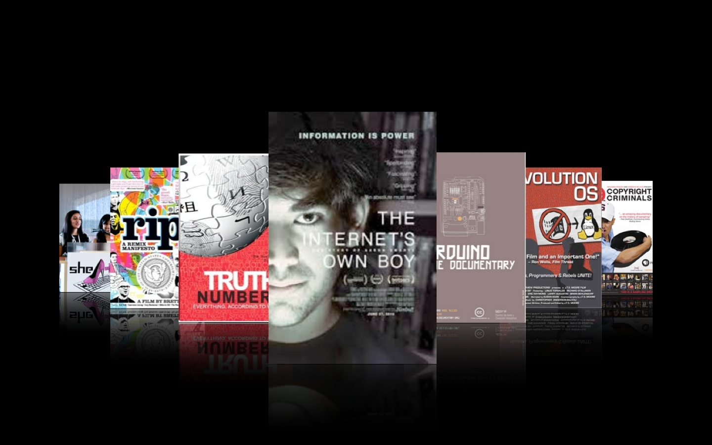

開設獨立帳戶、收款取款、對帳、製作報表、開立收據... 一點都不迷人的繁瑣的行政庶務，卻是在幕後默默支援所有專案、不可或缺的基礎建設。如果您無法決定要贊助哪個專案，就贊助我們吧！健康的行政中心讓所有專案都共同受益。

OCF 行政中心

國際交流計劃
藉由多樣交流形式建立本地社群與國際社群的連結，促使彼此相互認識與合作的機會，同時也希望能協助更多學生開拓國際視野，站上國際舞台，主動分享開源成果，並於回國後分享心得，為下一位受益者募集旅費，擴善計劃效益。

開放文化影展
預告預告！開源電影院即將上映：資訊自由鬥士 Aaron Swartz 精彩生平、開源之源、開放的自造世界...，開放文化的風在全球各地吹起，精心拍攝的電影、紀錄片，凝聚了箇中精華。本計畫洽談影片授權、翻譯成正體中文、製作字幕並上映，讓國人一睹開放文化的風采。

g0v 大松
g0v 零時政府發源地——固定雙月月底舉辦的 g0v 大松，工程師、設計師、律師、學者、NGO 工作者、公務員... 一起動手改變世界，現場提供源源不絕的食物，讓大家盡情 hack、eat、hack！開放任何人免費報名，場地餐點等費用皆來自贊助。

培育資訊科技產業明日之星
TBD